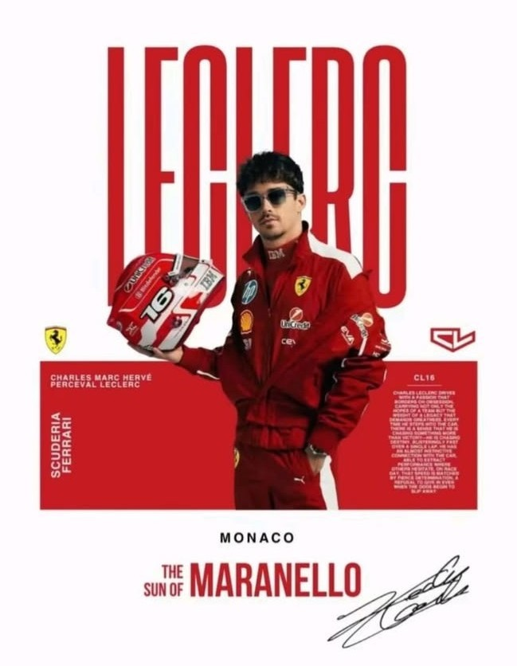
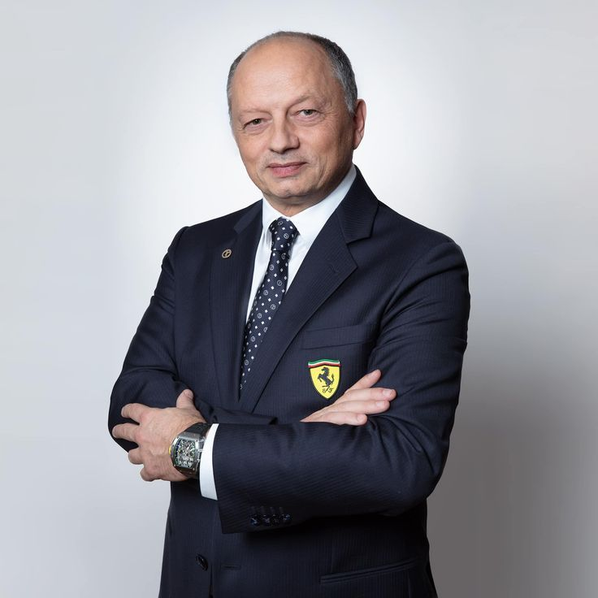
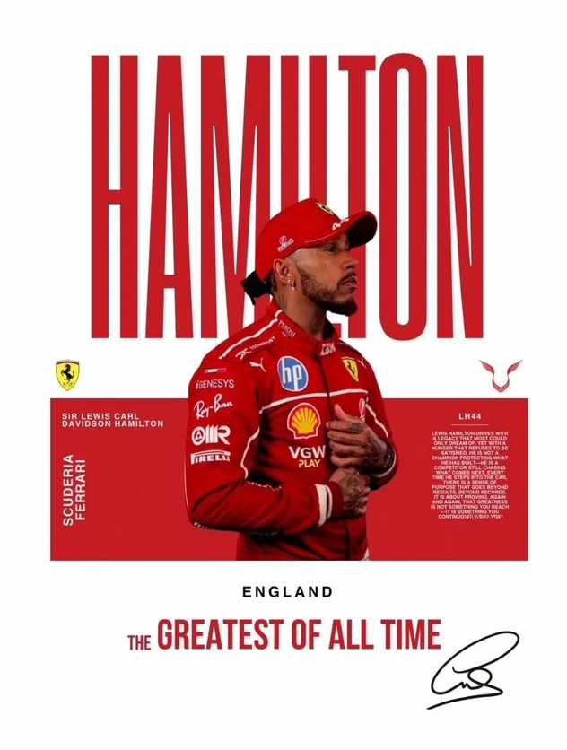
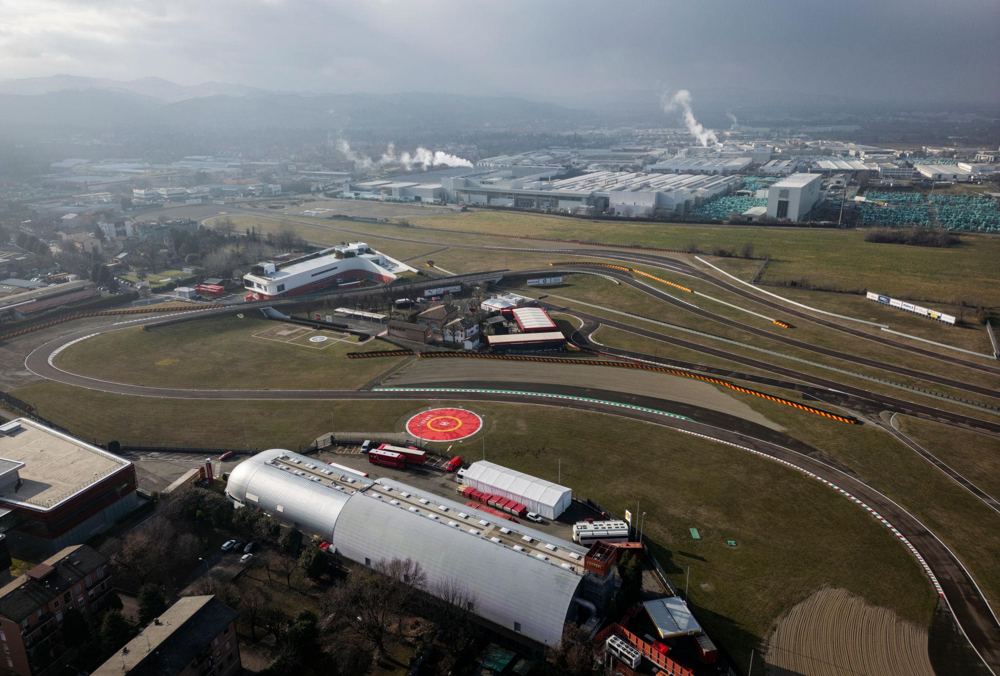

This is Scuderia Ferrari
TEAM
The people leading our team to success

Charles Leclerc
Is a Monégasque racing driver who competes in Formula One for Ferrari. Leclerc was runner-up in the Formula One World Drivers' Championship in 2022 with Ferrari, and has won nine Grands Prix across nine seasons.

Fred Vasseur
Is a French motorsport executive, businessman and engineer. Since 2023, Vasseur has served as team principal of Ferrari in Formula One; he previously served as team principal of Renault, Sauber and Alfa Romeo.

Lewis Hamilton
Is a British racing driver who competes in Formula One for Ferrari. Hamilton has won a joint-record seven Formula One World Drivers' Championship titles and holds the records for most wins (106), pole positions (104), and podium finishes (207), among others.
Scuderia Ferrari HP SF-26 (Proiectul 678)
The New 2026 Ferrari Single-Seater
Codenamed Project 678, the SF-26 is the first Ferrari car to be created for the 2026 Formula One regulations, and therefore features significant changes from its predecessor, the SF-25. Designed under the leadership of Chassis Technical Director Loïc Serra and Power Unit Technical Director Enrico Gualtieri, the SF-26 was first unveiled on the 23 January 2026 during a shakedown at the Fiorano Circuit, showing its new push-rod suspension and manual override mode. The SF-26 made its race debut at the season-opening 2026 Australian Grand Prix.
Technical Specifications – Engine: 1600cc (1.6-liter) twin-turbo V6. Aerodynamics: Active front and rear aerodynamics, in compliance with the new regulations. Hybrid system: Significantly increased power for the MGU-K (contributing approximately 50% of the total power), elimination of the MGU-H.
Learn moreHistorically significant routes
House, fans, history

Pista di Fiorano
Fiorano is hallowed ground—the home and living engineering vision of Enzo Ferrari. Built in 1972 just beyond the factory gates in Maranello, this private circuit was conceived by *Il Commendatore* as a place where "every single section must test a specific aspect of the car's behavior." Fiorano holds sacred significance for the Scuderia: for decades, every single Formula 1 car and road-going supercar bearing the brand's badge was born and took its first steps on this 3-kilometer circuit, with its iconic hairpin and bridge. The site is steeped in the history of great victories; it was here that Niki Lauda, Gilles Villeneuve, and Michael Schumacher spent days and nights driving endless laps in search of the perfect setup, all under the watchful eye of Enzo himself, who observed the testing from the windows of his home located right in the center of the track. For Ferrari, the Fiorano circuit symbolizes total control over the vehicle development process; it is the tangible embodiment of their perfectionism and the starting point for every one of the team's triumphs.